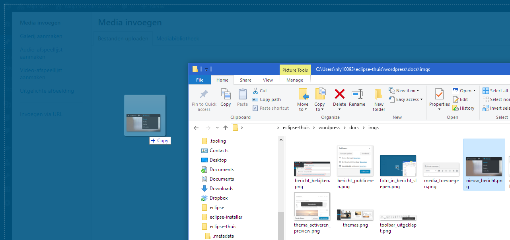
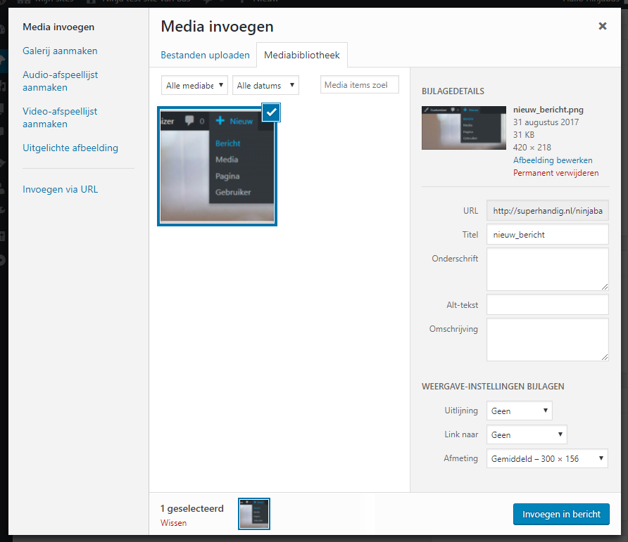
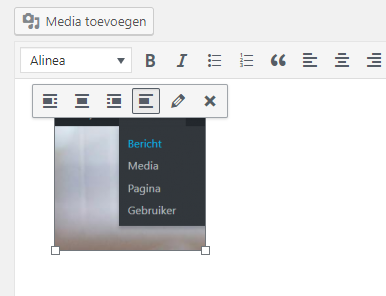

Instructies voor WordPress
Inhoud
Introductie
WordPress is een programma dat je kunt installeren op een webserver en waarmee je relatief eenvoudig een website kunt maken.
Installeren
Meestal heb je niet zelf een webserver, maar maak je gebruik van een webhoster. Dat is een bedrijf dat meerdere webservers heeft en waar je je eigen website op mag zetten. Omdat heel veel klanten om WordPress vragen, hebben ze meestal een webpagina waarmee je heel eenvoudig je eigen WordPress op hun server kunt installeren.
Als je thuis WordPress wilt uitproberen, dan heeft Louis een instructie geschreven voor het gebruik van Instant WP. Je kunt daarmee WordPress op je eigen Windows computer installeren, zodat je wat kunt experimenteren met het uiterlijk van je site, of het gebruik van plugins.
Voor de CoderDojo hebben we een server voorbereid waarop je je eigen WordPress site mag gaan zetten. Je kunt zelf een site registreren via programmeren-voor-kinderen.nl/wp-signup.php Je kunt daarna hier inloggen: programmeren-voor-kinderen.nl/wp-login.php.
Pagina's of berichtjes?
Als je in op het dashboard van WordPress kijkt, dan zie je bovenaan de knop "+ nieuw". Als je daarop klikt, dan krijg je verschillende opties waaruit je kunt kiezen. "pagina" en "bericht" zijn misschien wel het belangrijkst. Maar wat is nu het verschil tussen die twee? En wanneer gebruik je welke?
Een pagina en een bericht zijn beiden stukken tekst.
Meestal is een bericht een kort stuk tekst en gaat het om een actueel onderwerp. Je zou bijvoorbeeld elke dag
een stukje kunnen schrijven over een onderwerp dat je bijvoorbeeld in de krant hebt gelezen. Vaak zijn berichtjes onder
het kopje "nieuws" in het menu van je site te vinden.
Op een pagina zet je meestal wat meer tijdloze informatie. Bijvoorbeeld over hoe je het best een deur kunt schilderen.
Pagina's zijn meestal ook direct vanuit het menu van je site te bereiken.
Thema kiezen
Nu je het verschil tussen pagina's en berichtjes kent, kun je een thema kiezen dat het beste past bij wat je je site wilt laten zien. Een thema zorgt voor het uiterlijk van je website. Je vindt het thema van je website (als je ingelogd bent) onder Weergave > Thema's:
Door met je muis over een thema te bewegen, krijg je de opties om een ander thema te activeren of om een preview te bekijken:
Probeer wat thema's uit en kies (activeer) een thema dat je goed vind voor jouw website.
Berichtjes
Eerder zagen we al dat er een verschil is tussen berichtjes en pagina's. Nieuwe berichten (ook wel blogposts genoemd) komen direct op je beginpagina. Kies voor nieuw bericht (zie het plaatje hieronder) om een bericht te schrijven:
Als je hebt geklikt zie je onderstaande invulvelden. Een voor de titel van je bericht, en een uitgebreider veld voor de tekst van je bericht. Probeer de invulvelden te vullen met een titel en een korte tekst die je zelf hebt bedacht.
Nadat je wat tekst hebt geschreven kun je je bericht publiceren. Dat kan met de blauwe knop, rechts in het scherm (zie het plaatje hieronder).
Als je nog niet helemaal klaar bent met schrijven, zou je kunnen kiezen voor Concept opslaan. Je bericht wordt dan wel opgeslagen, maar niet gepubliceerd op je website. Nu gaan we het bericht wel publiceren.
Je kunt je nieuwe bericht nu bekijken. Om dat te doen kun je op verschillende links en knoppen klikken (zie het plaatje hieronder). Bijna al deze links laten direct je bericht zien. Alleen via Site bekijken zie je het bericht zoals het op je voorpagina komt te staan.
Bij het maken van een pagina heb je al gezien dat je wat opties hebt om je tekst te bewerken (vet gedrukt maken, schuin gedrukt maken, etc.). Probeer de opties uit de toolbar uit als je dat nog niet hebt gedaan. Probeer ook een linkje te maken.
Het laatste icoon van de toolbar zorgt ervoor dat je nog wat extra opties krijgt om, bijvoorbeeld, de kleur van je tekst aan te passen
Probeer (een deel van) je tekst eens van kleur te veranderen!
Pagina's
Zoals eerder uitgelegd, worden pagina's meestal gebruikt om informatie te delen. Ze hebben ook een vaste plaats in de website en zijn meestal via een menu bereikbaar.
Verder zijn de mogelijkheden vergelijkbaar met het maken van een bericht.
Video toevoegen
Net zoals afbeeldingen, kun je ook video's aan je website toevoegen. Het probleem van video's is dat deze bestanden vaak te groot zijn. Je krijgt van je webhost niet genoeg ruimte om veel video's te plaatsen.
Daarom gebruiken veel website bouwers YouTube of Vimeo om video's te hosten. Je kunt de links van deze video's dan in een bericht of pagina plakken.
Zoek eens een video op die je leuk vindt. Kopieer vervolgens de link naar de video uit de adresbalk van je browser. Als je de link hebt gekopieerd, kun je deze in een bericht of pagina van je website plakken. Zie je wat er gebeurd?!
WordPress snapt zelf dat de geplakte link een video is, en laadt deze direct in. Handig! Sla je pagina of bericht nu op en bekijk 'm in je website.
Nog even herhalen hoe je een video plaatst:
- Zoek een leuk filmpje op YouTube of Vimeo
- Kopieer de link van de video
- Plak de link in een pagina of bericht
- Sla de pagina of het bericht op
Afbeeldingen toevoegen
Zowel bij berichten als pagina's werkt het toevoegen van afbeeldingen op dezelfde wijze. Je kunt dezelfde werkwijze gebruiken als bij video's:
- Zoek een leuke afbeelding op op internet
- Kopieer de link naar de afbeelding door met de rechter muisknop op de afbeelding te klikken. Kies "open foto in nieuwe tab" en kopieer vervolgens het adres van de adresbalk.
- Plak de link in een pagina of bericht
- Sla de pagina of het bericht op
Als je foto's van je eigen computer wilt gebruiken, dan werkt het anders. Je moet de foto eerste uploaden naar de webserver en dan kun je het invoegen op een pagina of bericht. Volg daarvoor de volgende stappen:
- Klik op de knop "media toevoegen"

- Open een verkenner scherm en verklein het zodat je het boven het scherm "media invoegen" kunt zetten. Zorg dat je de foto die je wilt toevoegen zichtbaar hebt in de verkenner.
Klik vervolgens met de linker muisknop op het foto bestand en houd de knop ingedrukt. Sleep nu het bestaand buiten het verkenner scherm tot boven "media invoegen". Het scherm
zal blauw kleuren zoals in onderstaande afbeelding. Laat nu de knop los en de foto zal worden gekopieerd naar de web server.

- Nadat de foto geupload is, verschijnt het vanzelf in het scherm. Je kunt in de rechter kolom nog een aantal dingen aangeven hoe je de foto in je bericht of pagina wilt hebben. Je kunt bijvoorbeeld
een onderschrift toevoegen, dat wordt dan onder de foto geplaatst. Ook kun je bij "uitlijning" aangeven of je de foto links, rechts of in het midden wilt hebben, wat de afmeting moet zijn en tenslotte of
en zo ja waarnaar je wilt doorklikken. Bijvoorbeeld als je een verkleinde foto plaatst, naar de volledige foto of naar een andere website met meer informatie over het onderwerp in de foto. Klik tenslotte
op de knop "invoegen in bericht/pagina".

- Als de foto is ingevoegd en je wilt toch nog wat aanpassen, dan klik je op de foto. Er verschijnen dan een paar opties om de plaatsing van de foto aan te passen of om naar een ander scherm te gaan om
nog meer zaken aan te passen.

Conclusie
Je hebt een overzicht gekregen van de mogelijkheden van WordPress en kunt nu zelf berichtjes en pagina's maken. Er is echter nog veel meer mogelijk. Je kunt bijvoorbeeld de mogelijkheden uitbreiden door extra software te installeren in de vorm van plugins.
Goede uitgebreide Nederlandstalige site over het gebruik van WordPress voor beginners is WordPress handleiding voor beginners.

Dit werk is gelicenseerd met een Creative Commons Attribution-NonCommercial-ShareAlike 4.0 International License.